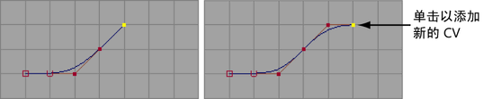

将 CV 或编辑点添加到曲线终点
- 选择要添加 CV 的曲线，或选择要添加编辑点的最后一个编辑点。
- 选择。
- 在视图中单击以添加新的 CV 或编辑点。
- 按 Enter 键以完成曲线。

将曲线或曲面上的曲线延伸一段距离
- 选择曲线。
- 选择“曲线 > 延伸 > 延伸曲线”(Curves > Extend > Extend Curve) >
 或“曲线 > 延伸 > 延伸曲面上的曲线”(Curves > Extend > Extend Curve on Surface) > 。
或“曲线 > 延伸 > 延伸曲面上的曲线”(Curves > Extend > Extend Curve on Surface) > 。
- 单击“距离”(Distance)（或针对曲面上的曲线，单击“参数化距离”(Parametric Distance)），然后输入曲线要延伸的距离。在延伸后，可以通过交互方式在通道盒或属性编辑器中更改距离。
对于曲面上的曲线，“参数化距离”(Parametric Distance)会在曲线延伸的方向设定一段曲面长度。例如，值 0.5 表示在曲线延伸的方向将曲线延伸大约曲面的一半长度。
- 执行下列操作之一：
- 单击“线性”(Linear)以直线方式延伸曲线。
- 单击“圆形”(Circular)以圆弧方式延伸曲线。
- 单击“外推”(Extrapolate)保持切线连续性和曲线的当前形状。
- 设定“延伸以下位置的曲线”(Extend Curve At)以选择要延伸的起始端点（或“二者”(Both)端点）。
- 要使延伸部分与当前曲线相同，启用“接合到原始”(Join to Original)。禁用该选项可使延伸部分成为新的曲线。
- 单击“延伸”(Extend)或“延伸 CoS”(Extend CoS)。
延伸曲线或曲面上的曲线的一端到精确坐标
- 选择曲线。
- 选择“曲线 > 延伸 > 延伸曲线”(Curves > Extend > Extend Curve) > 或“曲线 > 延伸 > 延伸曲面上的曲线”(Curves > Extend > Extend Curve on Surface) > 。
- 单击“点”(Point)（或针对曲面上的曲线，单击“UV 点”(UV Point)）。
- 设定“延伸以下位置的曲线”(Extend Curve At)以选择要延伸的起始端点。
- 要使延伸部分与当前曲线相同，启用“接合到原始”(Join to Original)。禁用该选项可使延伸部分成为新的曲线。
- 单击“延伸”(Extend)。
提示： 当“保持原始”(Keep Original)在“延伸曲线”(Extend Curve)选项框中处于启用状态时，Maya 将在曲线上创建延伸节点。您可以在“通道盒”(Channel Box)或“属性编辑器”(Attribute Editor)中选择延伸节点来以交互方式调整延伸操作，包括距离。